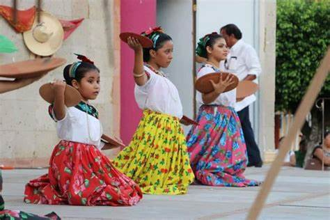

DANZA DEL POCHÓ
Es una danza que se realiza durante el Carnaval de Tenosique. De origen prehispánico, esta danza era practicada
como parte de una ceremonia religiosa de culto a sus dioses. Cuando los conquistadores convirtieron a los
indígenas al cristianismo, esta danza siguió ejecutándose y es así como se conserva hasta nuestros días. Inicia el
20 de enero y termina el martes antes del miércoles de ceniza.
El nombre "Pochó" proviene de una deidad maya asociada con la muerte y el inframundo. La danza simboliza la
batalla espiritual entre los espíritus malignos (los Pochós) y los guerreros que buscan purificar el
mundo.
CARACTERISTICAS
• Personajes: Cojóes (hombres), Pochoveras (doncellas) y Tigres.
• Tema: Purificación del hombre a través de la lucha entre el bien y el mal.
• Música: Sones melancólicos de danza.
• Instrumentos: Tambor.
VESTIMENTA
• “Cojóes” (danzantes o jugadores): Son hombres disfrazados de modo extraño. Las prendas principales son: Una
máscara de madera con facciones regulares o grotescas a la que se le ponen bigotes, barbas y cejas de cerda, una
túnica formada por un costal u otro saco construido con fibras y polainas, “sojol” o sea fragmentos secos de tallo
de plátano. Las hojas secas de plátano son colocados de las rodillas a los pies; hojas verdes de castaña rodean a
su cintura: sacos de hene-quén les cubren el tórax. Las máscaras o caretas multicolores vuelven anónimos sus
rostros. Mantas y pañuelos, sombreros tejidos, adornados con flores y hojas de cañitas describen a los “Cojoes” en
un ritual ancestral, en donde la acentuada distorsión de sus voces emite sonidos guturales que dan tono de fiesta
envuelta de colores y misticismo.
• “Tigres”: Los hombres llevan un taparrabo, cubren la desnudez del resto de su cuerpo con una capa de barro
amarillo, líquido que se seca sobre la piel, en la cual se pintan manchas negras de carbón. Por último, se cubren
la espalda con una piel de jaguar, que ha sido cuidadosamente obtenida, conservándole la cabeza, la cola y las
uñas.
MÚSICA
La danza es acompañada por música de tambores, flautas y otros instrumentos de viento y percusión. Los ritmos son
enérgicos y ceremoniales, marcando el paso de los danzantes. La música tiene un ritmo hipnótico que guía los
movimientos de los participantes, creando una atmósfera de ritual y misticismo
LA DANZA
La estructura de esta danza se divide es cinco partes separadas por cambios de música. Los bailarines realizan
movimientos coreográficos que representan la batalla entre los Pochos y los Moros. Estos movimientos pueden
incluir pasos de baile, gestos dramáticos y luchas simuladas, creando una experiencia visual y emocionante para el
público.
DANZA DEL CABALLITO BLANCO
Esta danza es originaria de la población de Tamulté de las Sabanas en el municipio de Centro. Tiene un carácter
guerrero de tiempos de la Conquista, y pertenece al grupo de las danzas de conquista y teatro ritual. Representa
el combate entre los indígenas tabasqueños contra los españoles, en la batalla de Centla.
De clara acepción mestiza, escenifica la lucha entre dos guerreros bravíos, se baila generalmente en las
festividades a San Francisco de Asís, patrono de la comunidad. Participan en esta danza, un danzante indígena con
máscara, quien va a pie; un danzante a caballo representando a un español y el “promesero” o “Señor de las
Promesas” que son las personas del pueblo que siguen la peregrinación con una ofrenda, por lo que se baila a dos
tiempos. Esta danza, está inspirada en la batalla de Centla o Cintla (marzo de 1519).
VESTIMENTA
• El caballito y Jinete: confeccionado con una armazón de madera y tela blanca. Lleva bordados en la montura con
motivos florales. Hacia ambos costados del caballo sobre la montura se observan lo que simulan ser las piernas del
danzante, confeccionadas con tela y zapatos de niño.
• El indígena: viste con ropa común. Sus elementos son una máscara de madera pintada en color café. La cual lleva
una cabellera de ixtle. En la mano derecha porta un machete y en la mano izquierda una sonaja que hace sonar al
compás de la música.
Accesorios utilizados: Frutas, flores, velas, palias bordadas, una figura de caballito y una máscara.
MÚSICA
La música que acompaña la danza es alegre y pegajosa, generalmente interpretada con marimba, tambores y otros
instrumentos de percusión La melodía es vivaz y el ritmo es rápido y constante, adecuado para los movimientos
enérgicos de los niños.
DANZA
En esta danza chontal de tipo guerrera o de conquista donde los danzantes ofrecen sus ofrendas que se componen
generalmente de frutas, flores, velas y palias bordadas para el altar o parta el caballito, anteriormente era la
música de pito y tambor la que acompañaba a esta danza ahora es una banda de música de viento que ejecuta los
sones a bailar.
La tradición señala que antiguamente esta danza era bailada por un solo guerrero con máscara en honor al Dios
Kantepec.
Esta danza es considerada una reliquia folklórica por lo importante de su música y lo interesante de su muestra.
Ha sido muy poca llevada a los escenarios debido a los datos que hacen denotar un pasado lleno de tristes
acontecimientos para nuestro estado.
ZAPATEO TABASQUEÑO
El zapateo tabasqueño es una forma de danza tradicional que se paractica en el estado de Tabasco, México. Es una
expresión artística y cultural que combina movimientos de zapateado con música regional, como el son jarocho, el
son istmeño o el son huasteco.
VESTIMENTA
Hombres: Consiste en pantalón y camisa blancos de manta, cinturón negro. Paliacate o pañuelo como se le conoce en
Tabasco, rojo al cuello, zapatos negros y sombrero de palma original de Tabasco, botines negros.
Mujeres: visten falda floreada larga (traje regional ordinario) o falda azul marino con tiras de colores(traje
regional de media gala), blusa con tira bordada en el cuello y las mangas, peinado con chongo o “Turux”, dos
flores de tulipán del lado izquierdo, cuatro peinetas (representado las 4 regiones de Tabasco, en colores: rojo,
azul, amarillo y verde) y moño debajo del chongo. Todo esto se complementa con rebozo y zapatos negros.
MÚSICA
La música que acompaña el Zapateo Tabasqueño es interpretada principalmente por marimba, guitarra, contrabajo,
violín y a veces trompeta. La marimba es especialmente prominente y característica de la música tabasqueña.
El ritmo es rápido y sincopado, con un compás que facilita los movimientos de zapateo. Las melodías son alegres y
animadas, con patrones repetitivos que se prestan a la coreografía de la danza.
DANZA
Al iniciar la música, el grupo de hombres y mujeres comienza a bailar y “zapatear” al compás de los instrumentos
musicales. En el transcurso del baile del zapateo, la música se interrumpe por momentos y se dicen las “bombas”,
que son versos cortos dirigidos por el galán a la bailadora pueden ser de reproche amoroso, galantería o desaire;
ella contesta el reto con igual tono, después de esto, la música y el baile continúan.
La danza se puede ejecutar en parejas o en grupos. En parejas, hay una interacción constante y dinámica entre los
bailarines, a menudo con un juego de cortejo y coquetería. En grupos, los bailarines pueden formar filas, círculos
o realizar movimientos en conjunto.
En resumen, el Zapateo Tabasqueño es una danza vibrante y llena de vida que captura la esencia de la cultura
tabasqueña. Con sus ritmos alegres, vestimentas coloridas y movimientos enérgicos, esta danza no solo es una forma
de entretenimiento, sino también una celebración de la identidad y el patrimonio cultural de Tabasco.

DANZA DE LOS COMALES
Esta danza prehispánica es bailada solo por mujeres y es atribuida al municipio de Comalcalco y con justa razón
debido a su nombre. Representa la fertilidad de la tierra y los productos que esta brinda entre ellos el maíz y el
cacao base de la alimentación entre el pueblo maya chontal.
El protagonista en esta danza se utiliza es el denominado “Comal” que es un utensilio de cocina que tiene forma
circular y es elaborado de barro. Se usa para “tostar” semillas o para cocer las “tortillas” o totopostes”, y aún
persisten en la actualidad.
ELEMENTOS DE LA DANZA
• Comales: Los comales son el elemento central de la danza. Los participantes los llevan y los utilizan de manera
simbólica durante la coreografía.
• Utensilios de Cocina: Otros utensilios de cocina, como cucharas de madera, cestas y tortilleros, pueden ser
utilizados por los danzantes para complementar la temática de la danza.
MÚSICA
La música que acompaña la Danza de los Comales es típicamente alegre y rítmica, interpretada con marimba,
guitarras, tambores y otros instrumentos de cuerdas y percusión. El ritmo es marcado y festivo, adecuado para los
movimientos coordinados de la danza. Las melodías son simples y pegajosas, con un compás que facilita los pasos de
los bailarines.
DANZA
En esta danza se observan juegos de figuras como cruces, reverencias a los puntos cardinales, saltos, giros; pero
lo más representativo es el constante movimiento del comal de una mano a otra. Es bailada por mujeres. Al igual
que la danza pájaros no posee un vestuario específico.
VESTIMENTA
Hombres: Los varones pueden usar trajes sencillos que reflejen la vestimenta cotidiana de los campesinos o
trabajadores rurales, incluyendo sombreros de palma, camisas y pantalones de manta o algodón.
Mujeres: Las mujeres suelen vestir blusas bordadas y faldas amplias, típicas de la vestimenta tradicional
tabasqueña. A menudo llevan delantales y rebozos, y pueden portar cestas o utensilios de cocina como parte de la
danza.
Existen algunas variantes de faldas con aberturas a los lados y una blusa de escote cuadrado, otra versión es un
traje completo confeccionado en manta cruda y con dibujos de pirámides, mazorcas de maíz o de cacao y granos de
las mismas.
Los bailes prehispánicos como ofrenda a los dioses de nuestros ancestros y llegando así, hasta nuestros días,
representado ahora como un reflejo de la gran riqueza cultural de Tabasco.
BAILE
VIDEO
ÉPOCA DEL AÑO
Danza del pocho
Esta danza es típica de la región de Guerrero, México. Se lleva a cabo durante las festividades de la Virgen
de la Concepción, que tienen lugar el 8 de diciembre, aunque también puede ser parte de otras celebraciones
culturales y religiosas en diferentes momentos del año.
Danza del caballito blanco
Originaria de Veracruz, México, esta danza es comúnmente realizada durante las festividades de la Virgen de
la Candelaria, que se celebran el 2 de febrero. También puede formar parte de otras celebraciones culturales y
festivales locales en diferentes épocas del año.
Zapateo tabasqueño
Esta danza es característica del estado de Tabasco, México. Aunque no está necesariamente ligada a una época
del año específica, es común verla durante festivales regionales y eventos culturales a lo largo del año.
Danza de los comales
Esta danza es popular en varias regiones de México. A menudo se presenta durante festivales folclóricos y
eventos culturales, pero no está asociada específicamente con una época del año en particular, ya que puede
ser realizada en diversas ocasiones.